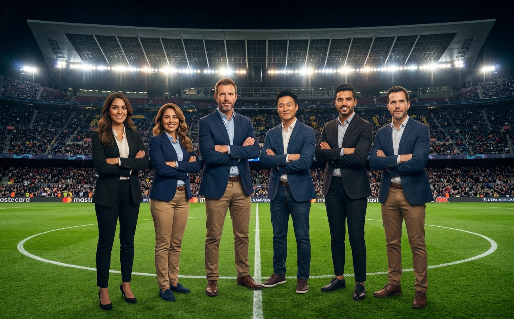

Nuestro Equipo de Trabajo
Nosotros
Nuestra historia y pasión
En SportCol, vivimos y respiramos la esencia del fútbol global. Nacimos con la firme convicción de convertirnos en el punto de encuentro definitivo para todos los apasionados del deporte rey. Somos una plataforma digital enfocada en conectar a los aficionados con la actualidad de las mejores ligas del mundo, ofreciéndoles resultados al minuto, el seguimiento en tiempo real del mercado de traspasos de los grandes clubes europeos y la cobertura detallada de las ruedas de prensa post-partido y las opiniones más relevantes del panorama futbolístico.
Nuestra misión
Nuestra misión en SportCol es entregar información deportiva rápida, veraz y de alta calidad, transformando la manera en que los fanáticos consumen la actualidad del fútbol. Nos esforzamos día a día por ofrecer una narrativa imparcial, objetiva y entretenida que trascienda el simple marcador de 90 minutos, brindando a nuestra comunidad un análisis profundo, contenido contextualizado y el debate que todo apasionado del balón busca.
El talento humano detrás de la noticia
El verdadero motor de SportCol es su talento humano. Contamos con un equipo multidisciplinario de periodistas, redactores y analistas deportivos que combinan la excelencia académica y la experiencia profesional con un amor genuino por el fútbol. Cada integrante de nuestro equipo destaca por su rigor investigativo, su ética profesional y su capacidad para descifrar la táctica y la dinámica de los clubes más importantes de Europa y el mundo.
Compromiso y cercanía con la afición
Más allá de su solvencia técnica y criterio analítico, nuestros profesionales se caracterizan por sus valores humanos: la empatía con el lector, el trabajo en equipo y una curiosidad insaciable por la verdad deportiva. En SportCol, creemos que el periodismo de calidad se construye con respeto, transparencia y cercanía. Por eso, nos dedicamos a llevarte la voz de los protagonistas y la pasión de la cancha directamente a tu pantalla, con la frescura y la precisión que mereces.